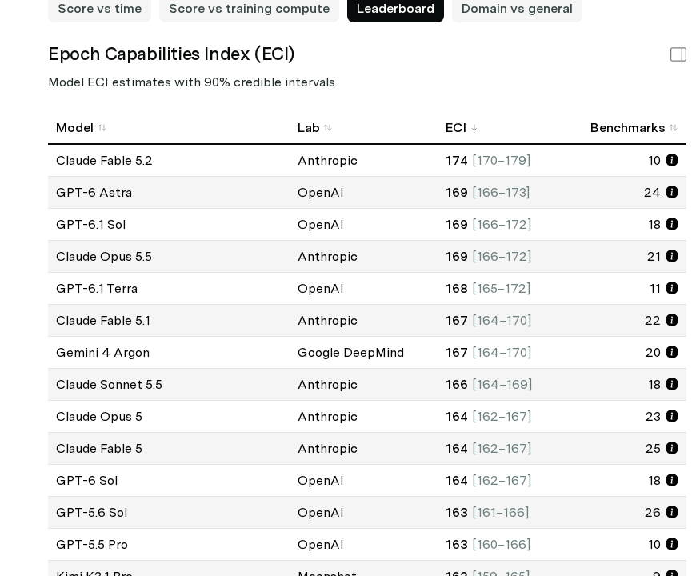

Recherche
Cherche dans toutes les synthèses archivées depuis leur mise en place (pas seulement les 3 dernières affichées dans "Nouveautés"), par mot-clé et/ou par domaine.
Nouveautés
07/11/2026 à 13:18 UTC Dernière exécution
L'actualité de la semaine est dominée par Mistral. Avec Le Chonk, le labo présente un modèle multimodal d'environ un trillion de paramètres, pensé pour le code et la cybersécurité (« Built for Coders, Trusted by Defenders »), associé à Mistral Large 4. Il peut être auto-hébergé et Mistral le présente comme « le meilleur modèle open-weight pour le code ». Cette affirmation vient de l'éditeur et n'est pas encore vérifiée de façon indépendante.
Chez Google, deux sorties se distinguent. EmbeddingGemma 2 propose un seul modèle d'embeddings pour le texte, l'image, l'audio, la vidéo et leurs combinaisons. Ses auteurs annoncent une nouvelle frontière de Pareto et des résultats supérieurs à des modèles spécialisés ou plus gros. Un tracker de sorties (nocode.mba, source en période d'essai) signale aussi Gemini Omni 1.2 Flash, un modèle de génération et d'édition vidéo facturé 0,07 $ par seconde en 720p, ainsi que Tencent Hy4, doté de compréhension visuelle. Hy4 vient d'entrer dans le classement indépendant OpenCompass (voir plus bas).
Côté recherche, plusieurs travaux ont des retombées pratiques : - Sécurité des LLM. Follow the Gradient remonte la dégradation de la sécurité d'un LLM jusqu'aux exemples d'entraînement qui la provoquent (AUC de 0,865). La méthode a servi à construire SafeTulu, un modèle plus sûr, à partir de travaux sur Tulu 3, Qwen, Llama et Olmo. - Agents. TreeOPSD propose une distillation adaptée au RL agentique à long horizon. Elle gagne +4,97 points sur GRPO en Deep Research avec Qwen3-30B-A3B-Thinking-2507. Un autre papier cherche à prédire le score SWE-bench Verified d'un agent de code après post-training dès le modèle de base. - Robotique et conduite autonome. RoboJEPA montre qu'un modèle de monde latent suit une loi d'échelle de second ordre et peut être déployé sans entraînement sur de vrais robots. Foundation4D vise un modèle unique de perception et de reconstruction à partir de vidéo multi-caméras. Il est évalué sur Waymo, nuScenes et OpenOccupancy. - Audio. Speculative Listening applique le décodage spéculatif aux modèles de parole full-duplex : l'inférence est accélérée de 2,6 à 2,8× sur TickTock-Bench, et jusqu'à 23,4× sur les segments d'appels d'outils. Sur le Hub, VeriSpoof-Base détecte les deepfakes audio avec un EER de 4,43 % sur Speech-DF-Arena et de 4,23 % sur SpoofRadar v1.0.
Deux papiers s'interrogent sur l'évaluation elle-même. Benchmarks as Software propose de valider les benchmarks d'agents en continu et publie Terminal-Bench 2.1, une version corrigée après revue humaine et assistée par LLM. Les chiffres annoncés : plus de 10 points d'accuracy d'écart sur Terminal-Bench 2.0 et un ρ de Spearman de 0,958. Your Benchmark Is an Empirical Measure Over Difficulty analyse 25 benchmarks populaires et propose des indicateurs pour repérer deux défauts : une difficulté réelle qui ne correspond pas à celle annoncée, et des niveaux de difficulté mal couverts.
Enfin, côté usages, OpenAI ouvre GPT-Rosalind aux laboratoires académiques avec des sièges gratuits pendant 12 mois. Meta détaille de son côté son cadre d'évaluation et de préparation à la sécurité pour ses modèles les plus avancés.
30/10/2026 à 08:03 UTC
Côté agents, plusieurs travaux testent des systèmes capables de conduire eux-mêmes une partie de la recherche. Le plus frappant est sans doute Build, Don't Play : en 20 jours, des agents de recherche LLM ont développé une IA de Hearthstone Battlegrounds qui rivalise avec les meilleurs joueurs. Leur agent, entraîné avec PPO, annonce 91 % sur TavernBench contre 63 % pour les LLM frontière, et une place moyenne de 1,60 avec 80 % de premières places, contre 2,34 et 59 % pour les dix joueurs les mieux classés du serveur. Athanor poursuit la même ambition avec une recherche post-entraînement autonome : le score annoncé pour Qwen3-4B-Base passe de 15,9 à 67,3. Dans un registre plus méthodologique, HGM-Dual cherche à réduire les coûts d'évaluation lors de l'optimisation d'agents de planification.
Du côté des modèles, Nanbeige4.3-33B vise le code et le travail en équipe professionnelle, avec 80,9 annoncé sur Terminal-Bench 2.1 et 23,8 sur Terminal-Bench 4.0. Tencent propose Hy-SimulMT-30B-A3B pour la traduction simultanée chinois-anglais en temps réel, avec un StreamLAAL de 3 secondes et un score GEMBA annoncé comme supérieur aux modèles open source et à 4 API commerciales. En audio, MiniMax-Music3 génère de la musique à partir d'une séquence de notes.
La vision apporte un résultat très concret : RLSplat contrôle le budget de ressources du splatting gaussien 3D. Il annonce dépasser la meilleure méthode de référence avec 4 fois moins de gaussiennes, et tourner jusqu'à 4,1 fois plus vite avec 9,6 fois moins de mémoire de pointe à bas budget.
Enfin, deux annonces méritent un détour côté écosystème. Mistral veut renforcer la souveraineté européenne avec le choix de la région d'inférence, des modèles ouverts et une capacité d'inférence fiable. Le blog de Google DeepMind mentionne notamment Genie 4, Gemini 4 Carbon et WeatherNext 3.
Sur les classements, artificialwatch place Claude Opus 5.5 en tête de son indice, avec 98,1. Cette première place n'est pas retrouvée dans la partie texte seul d'OpenCompass, où Kimi K3.1 Pro (max) arrive premier avec 78,47.
22/10/2026 à 09:57 UTC
Cette semaine, les agents dominent les résultats. Côté évaluation, MAI-Gym propose une plateforme open source unique pour évaluer des agents GUI, collecter des données et les entraîner par RL en ligne, sur mobile, ordinateur et web. Le modèle associé, MAI-Gym-9B, annonce 78,4 % sur MobileWorld et 76,2 % sur OSWorld-Verified. Côté apprentissage, ASTEROID apprend à explorer en contexte par distillation on-policy asymétrique. Il annonce des retours environ 2× plus élevés à budget d'exploration fixe, et +40 % par rapport à une distillation standard. Côté produit, Mistral lance Agentic Search, qui permet aux modèles de chercher et de naviguer dans les données internes d'une organisation. Les gains annoncés sont nets : de 26,7 % à 86 % sur FinanceBench, et de 6,3 % à 51,9 % sur OfficeQA Pro.
Sur l'architecture des LLM, deux papiers s'attaquent aux MoE « bouclés », qui gagnent en profondeur sans ajouter de paramètres. Looping Beyond Twice présente LOOM, une recette pour stabiliser et diversifier les récurrences. Sur un modèle de 1,7B à 9 boucles, la perplexité passe de 9,62 à 7,77 et la précision de 42,4 % à 47,7 %. LatentLoop répartit le calcul de façon asymétrique et annonce une NLL de validation inférieure de 7,9 % à celle d'un MoE Loop, et de 19,0 % à celle d'un MoE de base.
L'inférence progresse aussi. FuTransformer combine un prefill en FP8 et un décodage en INT4 sur Hopper. Il annonce 1,29 PFLOP/s, et une vitesse 2,1 à 3,3× supérieure au BF16 et 31 à 51 % supérieure au FP8. Specter associe quantification, décodage spéculatif multi-étapes et déchargement des experts MoE, pour un TPOT jusqu'à 1,88× meilleur que l'état de l'art.
Côté audio, deux sorties notables. Le rapport technique de Qwen-Audio-3.1-ASR annonce 89,5 % en ASR classique, 82,1 % sur la parole multilingue et dialectale, et 93,2 % en transcription avec diarisation. Mistral publie Voxtral 3, un SDK d'agent vocal temps réel dans plus de 50 langues, avec une synthèse vocale qui s'adapte à l'émotion.
Enfin, P2NPCBench pose une question simple : le problème est-il vraiment devenu plus dur ? Le benchmark associe des problèmes NP-complets à leurs « jumeaux » de classe P. L'écart est brutal : 35,4 % de pass@1 sur les NPC contre 63,8 % sur les P. À noter aussi, hors des sentiers battus : Prompteina, qui conçoit des structures protéiques à partir de texte et bat les baselines sur 15 des 18 propriétés structurelles, et HelixWorld, un modèle de monde audio-visuel interactif en temps réel.
Sélection : parmi les items jugés pertinents par le tri automatique (note ≥ 3/5, voir C5), Claude Code retient les 30 mieux notés puis choisit, pour chaque domaine représenté, les 2-3 items les plus représentatifs — ce n'est pas un classement strict par note, mais un choix éditorial fait par l'IA pour couvrir la diversité des sujets.
Top nouveauté par domaine
Texte
- Follow the Gradient : retrouve les données d'entraînement qui dégradent la sécurité d'un LLM (AUC de 0,865) et en tire le modèle SafeTulu.
- GPT-Rosalind pour la recherche académique : le modèle d'OpenAI dédié aux sciences du vivant devient gratuit pendant 12 mois pour les laboratoires universitaires.
- UltraBERT-380M : un encodeur de 380M paramètres pour les textes longs, orienté classification et recherche. Il est publié avec des variantes de 150M paramètres.
Vision
- Foundation4D : perception et reconstruction unifiées pour la conduite autonome (profondeur, détection d'objets), évaluées sur Waymo, nuScenes et OpenOccupancy.
- RoboJEPA : un modèle de monde latent fondé sur l'architecture JEPA, qui suit une loi d'échelle de second ordre et se déploie sans entraînement sur de vrais robots.
- Tracker de sorties (Gemini Omni 1.2 Flash, Tencent Hy4) : génération vidéo à 0,07 $/s en 720p pour Gemini Omni 1.2 Flash, compréhension visuelle pour Hy4. Rapprochement OpenCompass : la source n'annonce aucun score pour Hy4, mais le classement indépendant vient de l'ajouter (entrée du 2026-11-05). Hy4 (high) y obtient 69,02 au score global et 70,65 en texte seul, au 12ᵉ rang dans les deux cas. C'est une première mesure indépendante, pas une confirmation des capacités annoncées.
Agents
- TreeOPSD : une distillation qui tient compte de la structure en arbre des trajectoires dans le RL agentique à long horizon, avec +4,97 points sur GRPO en Deep Research.
- Prédire la performance d'agents de code dès le modèle de base : des tests légers sur le modèle de base pour estimer son score SWE-bench Verified pass@1 après post-training.
- Cadre d'évaluation de Meta : des évaluations renforcées et des rapports de préparation à la sécurité face aux risques émergents.
Multimodal
- Le Chonk (Mistral) : un modèle multimodal d'environ un trillion de paramètres, auto-hébergeable, spécialisé code et cybersécurité, que Mistral présente comme le meilleur open-weight pour le code. OpenCompass ne contient pas de donnée qui permette de le vérifier.
- EmbeddingGemma 2 : des embeddings unifiés pour le texte, l'image, l'audio et la vidéo, avec une nouvelle frontière de Pareto annoncée.
- NPCBench : un benchmark clinique multimodal sur le cancer du nasopharynx. Il compte 4 777 items et une cohorte de 100 patients avec 417 tâches notées, et 30 modèles y ont été évalués, dont 21 multimodaux.
Benchmarks
- Benchmarks as Software / Terminal-Bench 2.1 : une validation continue des benchmarks d'agents et une version corrigée de Terminal-Bench (plus de 10 points d'accuracy d'écart sur la 2.0, ρ de Spearman de 0,958).
- Your Benchmark Is an Empirical Measure Over Difficulty : deux indicateurs et un algorithme pour corriger les défauts de difficulté de 25 benchmarks populaires.
- Artificial Analysis — comparaison des modèles : un comparatif de l'intelligence, du temps et du coût par tâche (de 1,27 à 12,99 $) pour GPT-6 Luna, GPT-6.1 Terra, Gemini 4 Carbon, Claude Opus 5.5, Gemma 4 31B, Llama 4 Scout et d'autres. Rapprochement OpenCompass : plusieurs modèles cités ici et dans le leaderboard artificialwatch (en essai) figurent aussi dans l'extrait OpenCompass, comme Claude Opus 5.5 et GPT-6 Astra. Mais les métriques ne sont pas les mêmes (AW Index, LMArena ou index Artificial Analysis d'un côté, barème OpenCompass de l'autre), donc aucune comparaison directe n'est possible.
Code
- 3DCodeVerse : des agents de code génèrent et révisent du contenu 3D éditable et vérifiable sans retour humain, avec un taux de victoire de 90 % annoncé.
- FunCAD-Harness : une conception CAD de mécanismes validée par simulation physique, évaluée sur FunCADBench (46 familles de mécanismes).
- Qwen3.6-27B : un nouveau checkpoint de 27B paramètres publié par Qwen sur le Hub, sans benchmark fourni dans les données.
Audio
- Speculative Listening : un décodage spéculatif pour les modèles de parole full-duplex, avec une accélération de 2,6 à 2,8× (jusqu'à 23,4× sur les appels d'outils) sur TickTock-Bench.
- VeriSpoof-Base : un modèle de langage audio pour détecter les deepfakes, avec un EER de 4,43 % sur Speech-DF-Arena et de 4,23 % sur SpoofRadar v1.0.
- Features acoustiques interprétables dans les TTS de clonage vocal : un cadre d'interprétabilité appliqué notamment à Qwen3-TTS.
Autre
- Hidden Markov Preference Model : prédit en ligne les actions d'un attaquant sur CAGE 2 (0,8 nat par pas). La perte chute après 3 pas, contre 10 pour une baseline récurrente.
- QFabric : un prototype qui récupère des tâches entre Linux et un microcontrôleur. Les auteurs montrent les limites de l'approche, car la migration n'isole pas la tâche des interférences de Linux.
Benchmarks
Couleur = organisation (même couleur sur les deux graphiques) :
OpenCompass — classement par catégorie (top 10)
4 familles d'épreuves automatisées (questions à réponse vérifiable) : connaissance (culture générale, QCM factuels), raisonnement (logique, déduction), mathématiques et code. Chaque modèle répond à des milliers de questions ; le score est le pourcentage de bonnes réponses. Classement calculé par OpenCompass, indépendant des éditeurs de modèles.
Source : opencompass.org.cn — données collectées le
LMArena — classement par catégorie (top 10)
Pas un examen automatisé : des personnes réelles comparent en aveugle les réponses de deux modèles à la même question (texte, code, image ou vidéo générée) et votent pour la meilleure. Chaque vote fait monter ou descendre un score de type Elo (comme aux échecs) : gagner contre un modèle fort rapporte plus de points que gagner contre un modèle faible. Mesure une préférence humaine perçue, pas une exactitude technique vérifiable.
Source : arena.ai — données collectées le
Open ASR Leaderboard — reconnaissance vocale (top 10)
Taux d'erreur de transcription (WER, Word Error Rate) : pourcentage de mots mal transcrits par le modèle à partir d'un enregistrement audio, moyenné sur plusieurs jeux de données de référence (réunions, podcasts, discours...). Plus bas = meilleur.
Source : huggingface.co (Hugging Face) — données collectées le
Epoch Capabilities Index (ECI)
L'ECI résume la performance d'un modèle sur plus de 50 benchmarks différents en une seule note de capacité générale (comme un indice composite). Problème qu'il résout : un benchmark isolé finit par se "saturer" (tous les modèles approchent 100 %, impossible de les départager) — l'ECI compare les modèles entre eux sur l'ensemble des épreuves pour rester discriminant même quand certains tests individuels sont dépassés. Ce n'est pas une échelle en pourcentage : seule la position relative entre modèles compte, pas la valeur absolue.

Source : epoch.ai — capture d'écran (tableau non extractible en texte), prise le
Open source
Pour chaque catégorie, le meilleur modèle open source (licence ouverte) par performance, et le plus léger (par nombre de paramètres, quand cette information est publiée par la source). La licence exacte de chaque modèle est indiquée — "open source" recouvre des licences très différentes (Apache 2.0, MIT, licences communautaires propres à un labo...).
🏆 Meilleure performance (open source)
🪶 Plus léger (open source)
Sorties open-weight récentes (hors classements)
Modèles open-weight publiés sur le Hub Hugging Face que nos 3 classements n'ont pas (encore) repris — pas de score de performance ici, seulement la sortie et sa licence exacte.
Model Review
Résumé automatique (généré par un LLM local à partir de la fiche officielle) des nouveaux modèles publiés sur Hugging Face, toutes tâches confondues, depuis la dernière exécution du pipeline.
Sources
Toutes les sources suivies par le pipeline. active : collectée en continu. essai : candidate récemment admise, en période d'observation avant promotion ou exclusion automatique (voir méta-veille, C7). désactivée : écartée après la période d'essai faute d'avoir produit du contenu pertinent.
| Source | Type | Langue | Statut |
|---|---|---|---|
| AI Model Release Timeline 2026: 48 Models Tracked | benchmarks | en | active |
| AINews (smol.ai) | agregateur_reference | en | active |
| Anthropic News | publications | en | active |
| Artificial Analysis | benchmarks | en | active |
| BenchLM | benchmarks | en | active |
| China API | communautaire | en | active |
| DataLearner Leaderboards | benchmarks | zh | active |
| DeepSeek API Docs — News | publications | en | active |
| Epoch AI Benchmarking Hub | benchmarks | en | active |
| GitHub releases des labos | sorties_modeles | en | active |
| Google DeepMind Blog | publications | en | active |
| Hugging Face Daily Papers | publications | en | active |
| Hugging Face Hub (trending + organisations) | sorties_modeles | en | active |
| Import AI (Jack Clark) | agregateur_reference | en | active |
| Interconnects | agregateur_reference | en | active |
| LLM Leaderboard | benchmarks | en | active |
| LLM Market Cap | benchmarks | en | active |
| LMArena | benchmarks | en | active |
| Last Week in AI | agregateur_reference | en | active |
| LiveBench | benchmarks | en | active |
| Meta AI Blog | publications | en | active |
| MiniMax News | publications | en | active |
| Mistral AI News | publications | en | active |
| ModelScope | sorties_modeles | zh | active |
| Moonshot AI / Kimi Blog | publications | en | active |
| Nazarban | benchmarks | anglais | active |
| OpenAI News | publications | en | active |
| OpenCompass | benchmarks | en | active |
| Qwen Blog | publications | en | active |
| Scale AI SEAL Leaderboards | benchmarks | en | active |
| Semantic Scholar | publications | en | active |
| Simon Willison's Weblog | agregateur_reference | en | active |
| SuperCLUE | benchmarks | zh | active |
| The Batch (DeepLearning.AI) | agregateur_reference | en | active |
| Zhipu / Z.ai | publications | en | active |
| alphaXiv | publications | en | active |
| arXiv (cs.CL, cs.LG, cs.AI) | publications | en | active |
| chinese-llm-benchmark | benchmarks | zh | active |
| 机器之心 (Jiqizhixin) | sorties_modeles | zh | active |
| 量子位 (QbitAI) | sorties_modeles | zh | active |
| 7min.ai | publications | en | essai |
| AI Model Leaderboard | benchmarks | anglais | essai |
| AI Model Release Tracker | benchmarks | en | essai |
| AlphaSignal | publications | en | essai |
| ArtificialWatch | benchmarks | en | essai |
| Automation Anywhere | publications | en | essai |
| Axis Intelligence | benchmarks | essai | |
| Hugging Face | communautaire | en | essai |
| Kawsarlog | benchmarks | en | essai |
| Lisapedrosa | publications | en | essai |
| Momentic | communautaire | en | essai |
| No Code MBA | publications | en | essai |
| Open Chinese LLM Leaderboard Benchmark Scores & AI Model Leaderboard | benchmarks | en | essai |
| RapidClaw Dev | communautaire | en | essai |
| SiliconAngle | benchmarks | en | essai |
| Siliconainews | communautaire | en | essai |
| The Atlas by GenAI.Works | publications | en | essai |
| mejba.me/blog/emerging-chinese-ai-models-2026 | publications | anglais | essai |
| AI Agent Autonomy Statistics 2026: Levels & Benchmarks | publications | en | désactivée |
| AI Agent Benchmarks 2026: Who Leads SWE-bench & GAIA | communautaire | en | désactivée |
| AI Agent Capability Benchmarks 2026 - Presenc AI | benchmarks | en | désactivée |
| AI Release Tracker — AI Model Release Timeline | benchmarks | en | désactivée |
| Agent Reviews | communautaire | en | désactivée |
| China AI model release tracker | communautaire | en | désactivée |
| Codesota – Papers with Code Trending | publications | en | désactivée |
| Decodethefuture | communautaire | en | désactivée |
| Discourse | communautaire | en | désactivée |
| Discuss - Hugging Face | communautaire | en | désactivée |
| Hacker News | communautaire | en | désactivée |
| LMArena | benchmarks | en | désactivée |
| Open Source Generative AI & LLMs (Large Language Models) Discussion Forum | communautaire | en | désactivée |
| OpenClaw Forum - AI Agent Community Discussion Platform | communautaire | en | désactivée |
| Qwen Blog | sorties_modeles | en | désactivée |
| ToolPix | publications | en | désactivée |
| Tunx AI | publications | en | désactivée |
| What to Know About Chinese AI Models - CSIS | publications | en | désactivée |
| anhtu.dev | communautaire | en | désactivée |
| r/LocalLLaMA | communautaire | en | désactivée |
| r/MachineLearning | communautaire | en | désactivée |